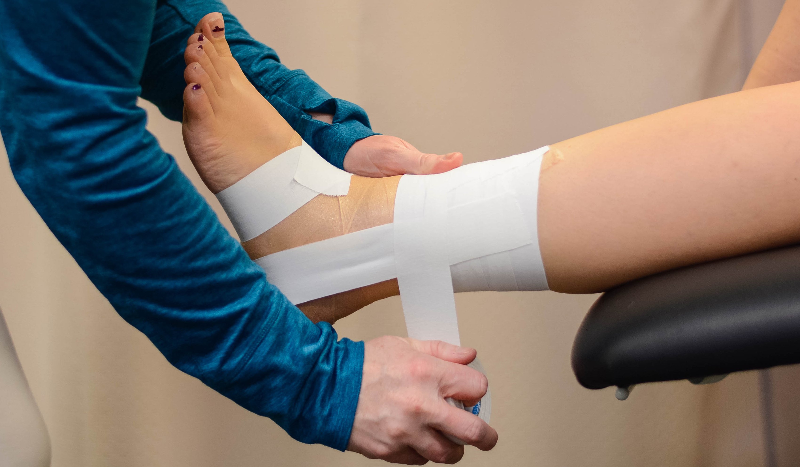

Ankle injury prevention tactics should be employed before an ankle sprain, to prevent them from happening. These prevention tactics are aimed at either strengthening the ligaments or using external support devices to stabilize the ankles.
With ankle sprains, the best case scenario is avoiding the injury completely. Strengthening the ligaments or restricting the ankle's range of motion have been shown by numerous studies as the most effective ways to prevent this injury from happening. If the ankle was left unprotected and the ligaments were left unstrengthened, athletes would be considerably more ussceptible to spraining their ankles and other ankle injuries.
Studies have shown that the frequency of ankle sprains decreases significantly when athletes are wearing ankle supports or other types of bracing. By restricting the ankle's range of motion, over-rotation is avoided and the ligaments are much less susceptible to tearing. The following image shows a more robust support brace (Left), which is more commonly found used by already-injured athletes, along with a lighter, more streamlined brace (Right), more commonly found in athletes that just want some extra support. For best results, consult with your doctor before picking out a brace to use.

For athletes that want lighter options, taping ankles is also a common prevention strategy. Although taping is less cost efficient than bracing, and also provides less support overall, it's still better than leaving the ankle unsupported. Using sports tape as shown below, a "makeshift brace" can be constructed using the tape. It's important to note that taping too tight can cause discomfort and a loss of circulation, and taping too loosely can make the taping itself uselss. Visit Bioped's Website for a simple tutorial.
